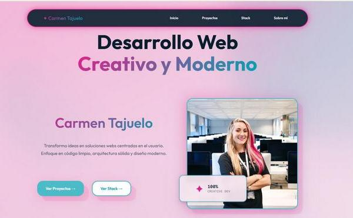
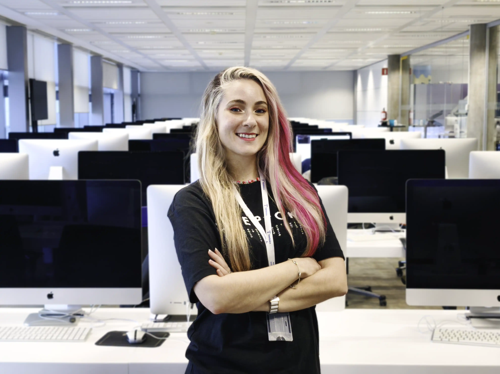
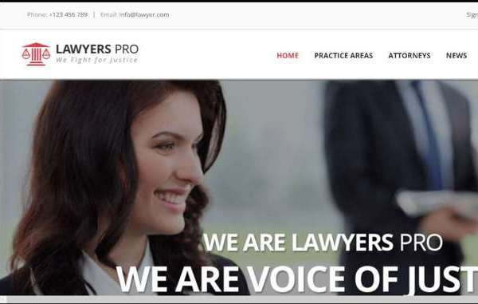

Mi Portfolio Web
Mi portfolio principal donde centralizo todos mis proyectos. Utilizo diseño responsive, código limpio y algún que otro detalle sutil azul y fucsia (pst... dark mode in progress).
Explorar CódigoTransformo ideas en soluciones webs centradas en el usuario.
Enfoque en código limpio, arquitectura sólida y diseño moderno.

Una selección de mis trabajos más recientes y proyectos creativos.

Mi portfolio principal donde centralizo todos mis proyectos. Utilizo diseño responsive, código limpio y algún que otro detalle sutil azul y fucsia (pst... dark mode in progress).
Explorar Código
Solución corporativa para despacho de abogados. Destaca por su branding profesional, arquitectura de servicios especializada e integración de canal directo vía WhatsApp para la gestión de citas en tiempo real.
Explorar CódigoPlataforma premium con enfoque en el impacto visual. Implementa galerías dinámicas con carga optimizada (Lazy Loading) y una interfaz minimalista diseñada para maximizar la conversión en dispositivos móviles.
Explorar CódigoHerramientas y recursos que uso diariamente en mi trabajo.
Mi centro de operaciones base. Mi editor por excelencia que utilizo para trabajar con código, desplegar la terminal y sincronizar los repositorios de Github.
Lo mejor del mundo para trabajar con versiones de código de forma no destructiva, con commits y ramas. Once you go Git... You never go back...
Mi herramienta favorita para inspeccionar, depurar, analizar y optimizar el código y la interfaz en tiempo real. F12-check-fix-repeat...
Mis planos antes del código. Mi lienzo en blanco donde prototipo los diseños de las webs que construyo. Utilizo plantillas y elementos predefinidos con flujos de diseño automáticos.
Mi centro de operaciones como fotógrafa, donde organizo, edito, exporto y archivo las fotografías de mis proyectos fotográficos (soy fotógrafa profesional).
Mi complemento perfecto a Lightroom cuando necesito modificar la foto en post-producción con IA Generativa.
Todo para potenciar tu presencia en GitHub: Readme.so para edición visual, tutorial oficial de personalización y plantillas listas para usar.
Diseño de CV de alto impacto. Proyecta tu profesionalidad con una hoja de vida impecable y visual.
Visitar →El estándar de "CV as Code". Automatiza, versiona y gestiona tu trayectoria profesional como un desarrollador.
Visitar →Un breve resumen de mi vida profesional.
Soy Carmen Tajuelo, desarrolladora web con experiencia en el sector de la traducción y tecnologías del lenguaje, y ahora estoy consolidando mi perfil en el mundo tech y STEM.
Cuento con más de 12 años de experiencia como Ingeniera de Localización, especializada en gestión de proyectos técnicos y migraciones de clientes entre plataformas. Durante este tiempo he trabajado en entornos altamente técnicos y estructurados, en directa colaboración con equipos de desarrollo. También trabajé en 42 Madrid, una experiencia clave para sumergirme en el aprendizaje colaborativo peer-to-peer y en metodologías donde la autonomía y la resolución de problemas son fundamentales. Sí, también sobreviví a la piscina… y a los punteros en C (RIP).
En noviembre finalicé el bootcamp Fullstack de Factoría F5, donde adquirí una base sólida en desarrollo web y programación, y desde entonces estoy centrada en seguir construyendo y afianzando mis habilidades técnicas.
Esta web es mi portfolio personal y, al mismo tiempo, mi laboratorio: un espacio donde muestro proyectos, experimento con nuevas tecnologías y sigo aprendiendo. No es un escaparate cerrado, sino el reflejo de mi proceso como desarrolladora web.
Mi background en ingeniería de localización ha marcado profundamente mi forma de abordar el desarrollo: tengo una mentalidad orientada a la resolución de problemas, atención al detalle y una fascinación constante por la escalabilidad, el orden y el mantenimiento. Hoy aplico ese enfoque priorizando soluciones claras, código semántico y mantenible, y un diseño centrado en el usuario, apoyado en buenas prácticas modernas.
“Vengo de la ingeniería de localización: lo que aprendí allí lo aplico hoy en el desarrollo web: precisión, orden y soluciones que funcionan en el mundo real.”
Paralelamente, he desarrollado una trayectoria creativa como fotógrafa y videógrafa de eventos, trabajando en contextos reales y muy exigentes. Tener mi propia cartera de clientes me ha enseñado a adaptarme rápido, gestionar tiempos ajustados y comunicar con claridad, habilidades que complementan mi perfil técnico y enriquecen mi manera de afrontar proyectos digitales.
Me motivan los proyectos con propósito, la intersección entre tecnología y creatividad, y seguir creciendo a través de retos reales. Si te apetece colaborar o intercambiar ideas sobre desarrollo, diseño o innovación, estaré encantada de conectar. Pásate por los meetups de las comunidades tech de Madrid, seguramente coincidamos por allí.